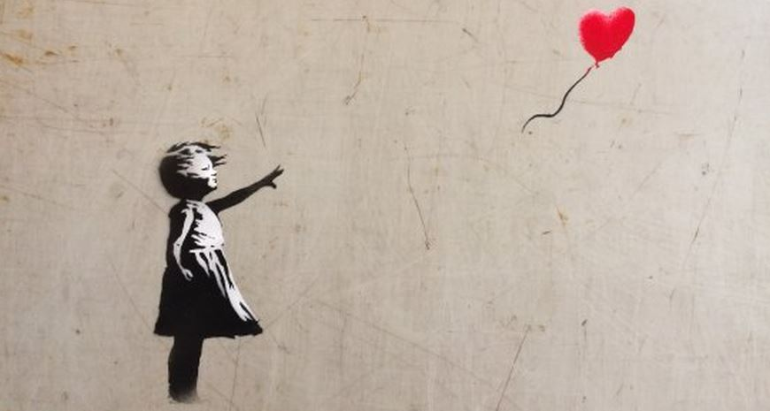
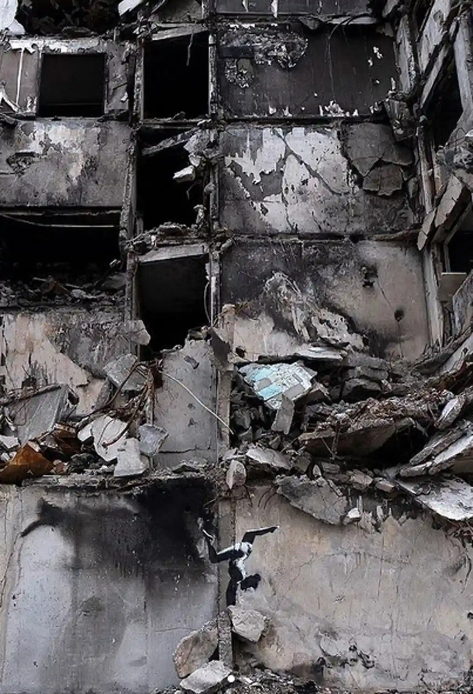
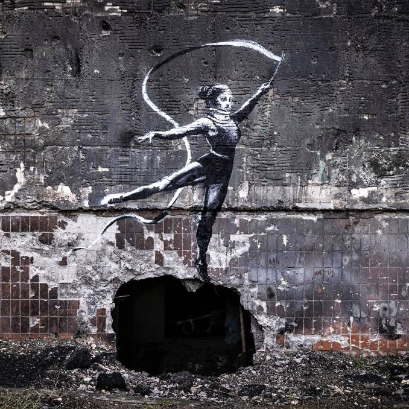

<!DOCTYPE html>
<html>
<head>

<title>artiste</title>
<meta charset="utf-8">
<link rel="stylesheet" type="text/css" href="mycss.css">
    <script src="myjs.js"></script>

</head>
</html>
<body>
<header>
    <nav>
        <a href="main.html"></a>
        <ul>
        <li><a href="main.html">Home page</a></li>
            <li><a href="index.html">Arts</a></li>
            <li><a href="facts.html">Facts</a></li>
        </ul>
    </nav>

</header>
<h1>Banksy</h1>
<div class="slideshow-container">

    <!-- Full-width images with number and caption text -->
    <div class="mySlides fade">
        <div class="numbertext">1 / 3</div>
        
        <div class="text">Banksy Swooping Seagull - Lowestoft</div>
    </div>

    <div class="mySlides fade">
        <div class="numbertext">2 / 3</div>
        
        <div class="text">I’m Out Of Bed Rat – Los Angeles/New York/Italy
        </div>
    </div>

    <div class="mySlides fade">
        <div class="numbertext">3 / 3</div>
        
        <div class="text">Rage, Flower Thrower –Palestine- Jerusalem</div>
    </div>

    <!-- Next and previous buttons -->
    <a class="prev" onclick="plusSlides(-1)">&#10094;</a>
    <a class="next" onclick="plusSlides(1)">&#10095;</a>
</div>
<br>

<!-- The dots/circles -->
<div style="text-align:center">
    <span class="dot" onclick="currentSlide(1)"></span>
    <span class="dot" onclick="currentSlide(2)"></span>
    <span class="dot" onclick="currentSlide(3)"></span>
</div>
<section>

<h1>The Anonymous artist</h1>
    <article>
        <p>Banksy is an England-based graffiti artist, political activist and film director of unverified identity. His satirical street art and subservise epigrams combine dark humour with graffiti executed in a distinctive stenciling technique. His works of political and social commentary have been featured on streets, walls, and bridges of cities throughout the world. Banksy's work grew out of the Bristol under- ground scene, which involved collaborations between artists and musicians.  Observers have noted that his style is similar to Blek le Rat, who began to work with stencils in 1981 in Paris. Banksy says that he was inspired by "3D", a graffiti artist who later became a founding member of Massive Attack, an English musical group.

            His work is rich in dark humour and frequently captioned with subversive epigrams that provide pejorative commentaries on socio-political aspects of contemporary life.He does not sell photographs or reproductions of his street graffiti, but art auctioneers have been known to attempt to sell his street art on location and leave the problem of its removal in the hands of the winning bidder.</p>
    </article>

    <aside>
        
    </aside>
</section>
<div id="artcontainer">
<h1>Latest ArtWork</h1>
<p>  Banksy appears to have confirmed he is in Ukraine after revealing
    his latest artwork on Instagram.Speculation had been mounting that
    the anonymous graffiti artist was in the war-torn country after a
    series of murals appeared in the town of Borodianka,near Kyiv.</p>

<div class="container">
<div class="imgside" >
    </div>
    <div class="emptyside">Banksy, Borodyanka, Ukraine
</div>
</div>

<div class="container">
    <div class="emptyside">Banksy, Borodyanka, Ukraine
    </div>
    <div class="imgside" >
    
    </div>
</div>
<div class="container">

    <div class="imgside" >
        
    </div>
    <div class="emptyside">Banksy, Irpin, Ukraine

    </div>
</div>

<div class="container">
    <div class="emptyside">Banksy, Gostomel, Ukraine
    </div>
    <div class="imgside">
        
    </div>
</div>
    <div class="container">

        <div class="imgside" >
            
        </div>
        <div class="emptyside">Banksy, Kyiv, Ukraine

        </div>
    </div>

    <div class="container">
        <div class="emptyside">Banksy, Kyiv, Ukraine
        </div>
        <div class="imgside" >
            
        </div>
    </div>


    <div class="container">

        <div class="imgside" >
            
        </div>
        <div class="emptyside">Banksy, Kyiv, Ukraine

        </div>
    </div>


    <div class="container">
        <div class="emptyside">Banksy, Kyiv, Ukraine
        </div>
        <div class="imgside" >
            
        </div>
    </div>
</div>


</div>
<iframe width="900" height="400" src="https://www.youtube.com/embed/U7lVSWWCaws" title="YouTube video player" frameborder="0" allow="accelerometer; autoplay; encrypted-media; gyroscope; picture-in-picture" allowfullscreen></iframe>

<footer>
    <h2>Check instagram for more artwork</h2>
        <a href="https://www.instagram.com/banksy/"></a>
</footer>
</body>